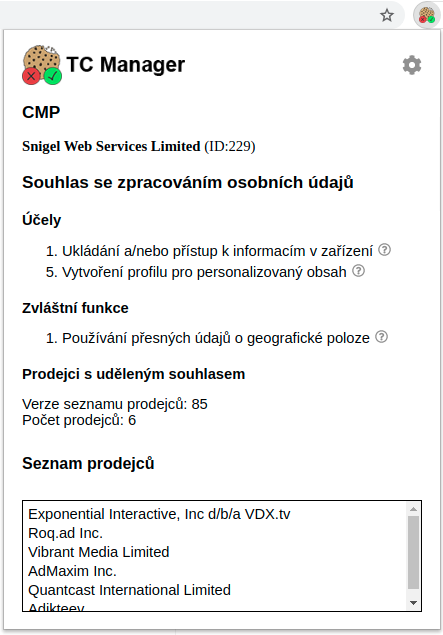
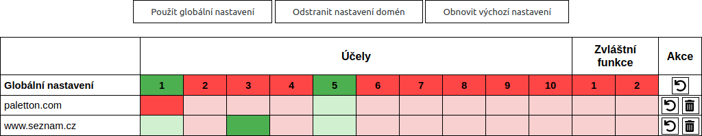
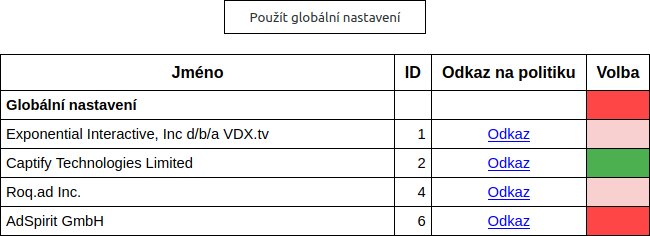

Vyskakovací okno
Ve vyskakovacím okně jsou zobrazovány informace o poskytnutém souhlasu se zpracováním osobních údajů uložené aktuální webovou stránkou.

Nastavení
Umožňuje nastavit souhlas s jednotlivými účely zpracování osobních údajů a s poskytováním těchto údajů jednotlivým prodejcům.
Nastavení souhlasu s účely zpracování

- Globální nastavení – Slouží jako výchozí nastavení pro udělení souhlasu webovým stránkám využívajícím TCF.
- – Odstraní nastavení pro danou doménu.
- – Změní nastavení domény na hodnoty globálního nastavení.
- Použít globální nastavení – Změní nastavení všech domén na hodnoty globálního nastavení.
- Odstranit nastavení domén – Odstraní všechny domény z tabulky. (Ponechá pouze Globální nastavení.)
- Obnovit výchozí nastavení – Obnoví výchozí nastavení.
- Po najetí myší na buňku tabluky se zobrazí název příslušného účelu/zvláštní funkce.
- Popisy jednotlivých účelů a zvláštních funkcí jsou umístěny v záložce 'Popisy účelů'.
Nastavení souhlasu pro prodejce
